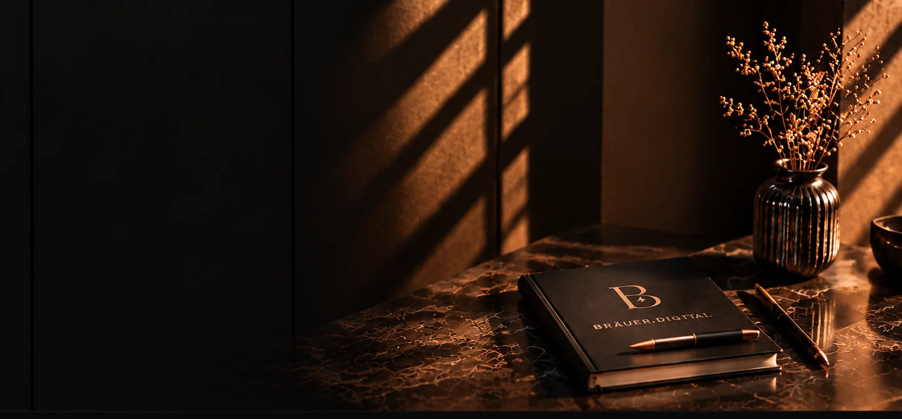
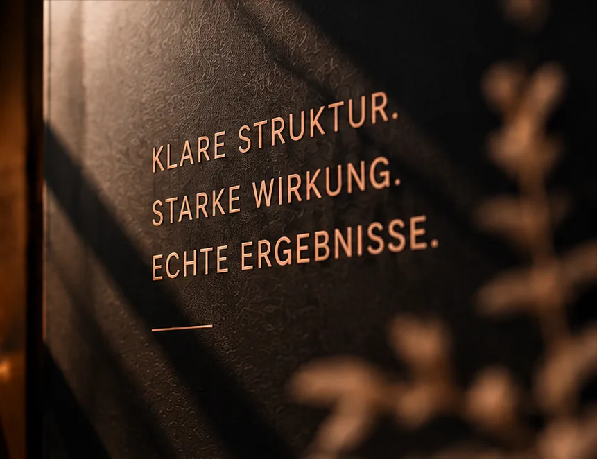
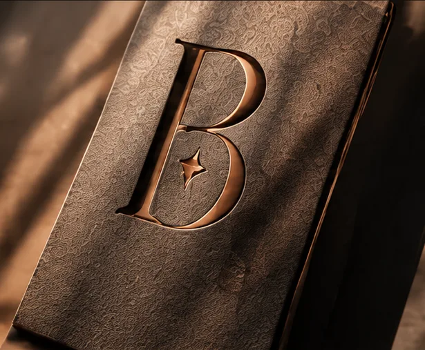

Über mich
Hallo, ich bin Beatrice Bräuer – die Person hinter bräuer.digital.

Gute Gespräche zuerst.
Bevor etwas gestaltet wird, höre ich zu: Was macht dein Unternehmen aus, und was soll deine Website für dich leisten?
Aus einer klaren Überzeugung.
Ein digitaler Auftritt darf ruhig, hochwertig und verständlich sein. Er soll nicht laut sein, sondern wirken.

Klare Struktur. Starke Wirkung. Echte Ergebnisse.
So lautet mein Anspruch an jedes Projekt – vom ersten Entwurf bis zur laufenden Betreuung.

Persönlich und verbindlich.
Ich bin Beatrice Bräuer und gestalte Websites und Online-Shops für Unternehmen, die online genauso hochwertig auftreten wollen wie im echten Leben. Von Bad Schussenried aus arbeite ich für Kunden in der Region und darüber hinaus.
Mir ist wichtig, dass du jederzeit verstehst, was ich tue und warum. Deshalb gibt es keine Fachbegriffe als Nebelwand, sondern klare Absprachen und einen verbindlichen Preis, bevor wir starten.
Und am Ende gehört dein Auftritt dir: Deine Domain geht nach dem ersten Jahr in deinen Besitz über.

Lass uns über deinen Auftritt sprechen.
Ein kurzes Erstgespräch zeigt, was für dein Unternehmen sinnvoll ist – unverbindlich und ohne Fachchinesisch.